📑 Dashboard Pages
1. Executive Business Overview
High-level view of supply chain operations across all key metrics, markets, and product categories. Provides context for deeper analysis.
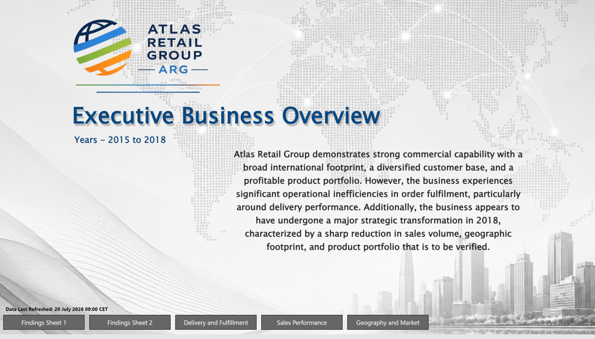
2. Findings Sheet 1
Key insights and patterns identified from initial analysis of supply chain performance data.
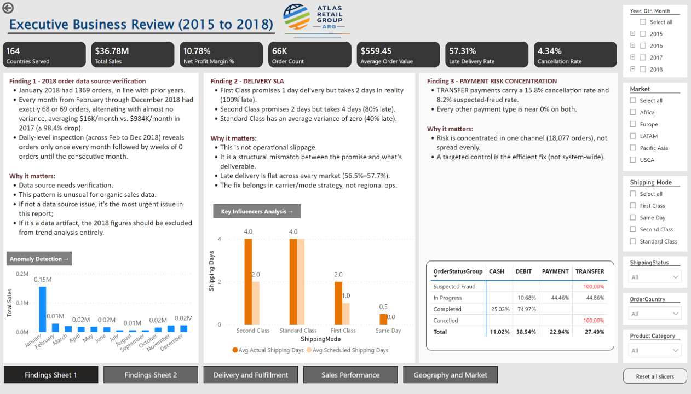
3. Findings Sheet 2
Additional findings and deeper insights into operational patterns and opportunities.
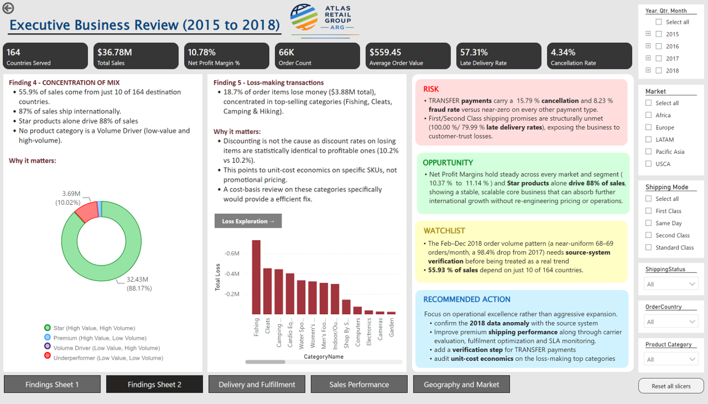
4. Delivery & Fulfillment Performance Report
Detailed metrics on delivery performance, fulfillment status, and on-time delivery rates across shipping modes and regions.
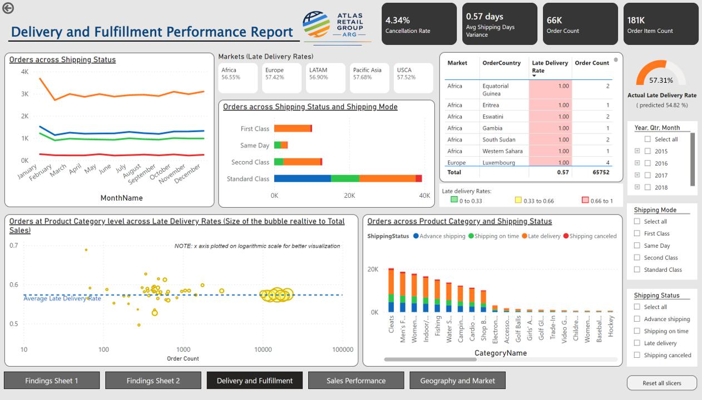
5. Sales Performance Report
Sales trends, revenue analysis, and performance metrics by product category, market, and time period.
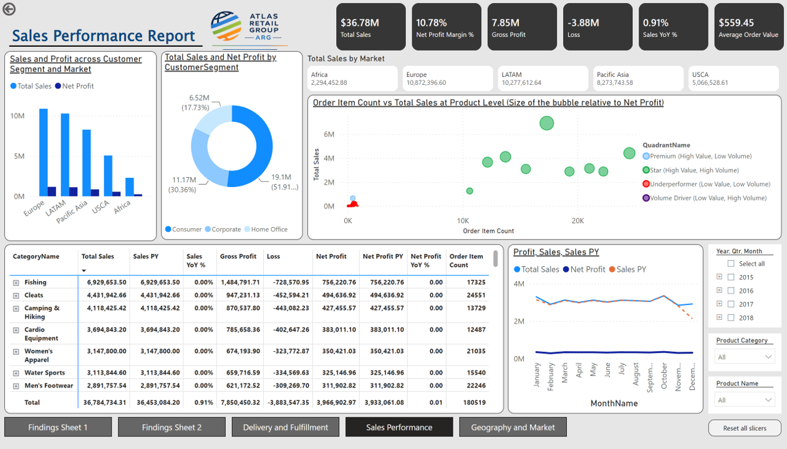
6. Geography & Market Report
Geographic segmentation of supply chain metrics, market-level performance, and regional delivery patterns.
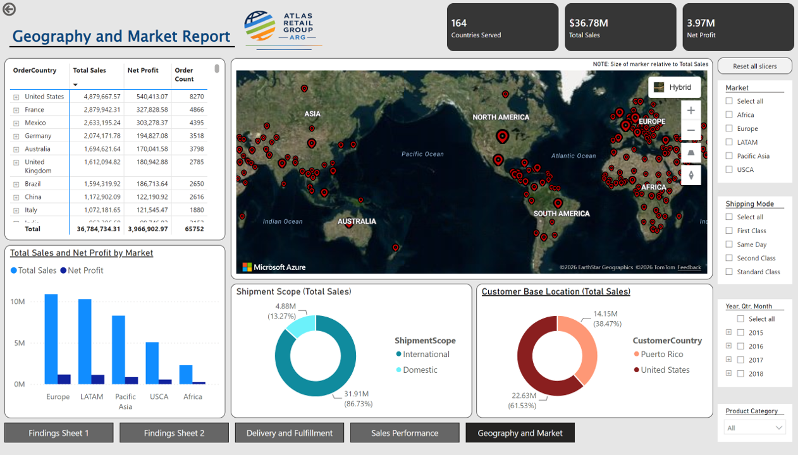
7. Anomaly Detection
AI-powered anomaly detection identifying unusual patterns and outliers in supply chain operations. Highlights potential risks and opportunities.
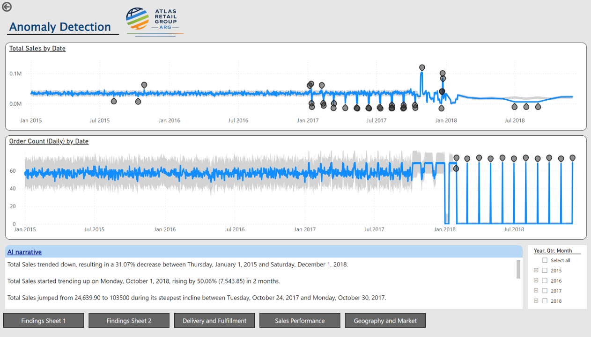
8. Key Influencers 1
Analysis of primary factors and influencers driving late deliveries and performance variation. AI-driven insights into root causes.
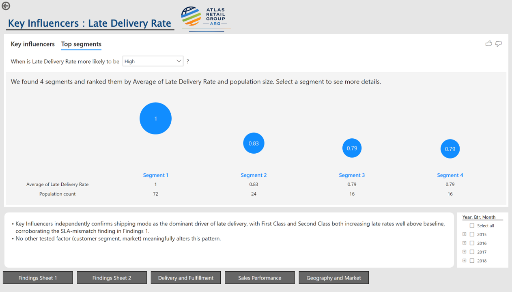
9. Key Influencers 2
Secondary influencers and contributing factors to supply chain outcomes. Detailed breakdown of categorical effects.
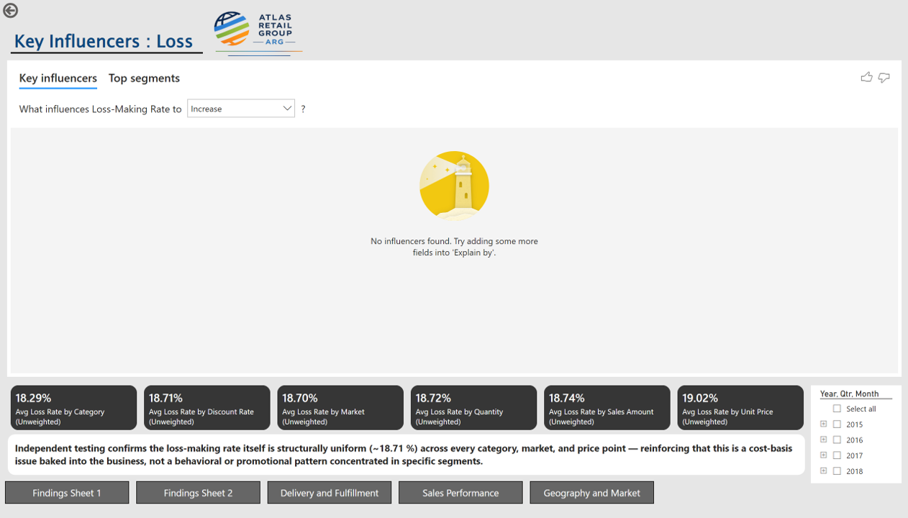
10. Decomposition Tree
Interactive decomposition analysis of late delivery risk, breaking down by market, shipping mode, product category, and customer segment.
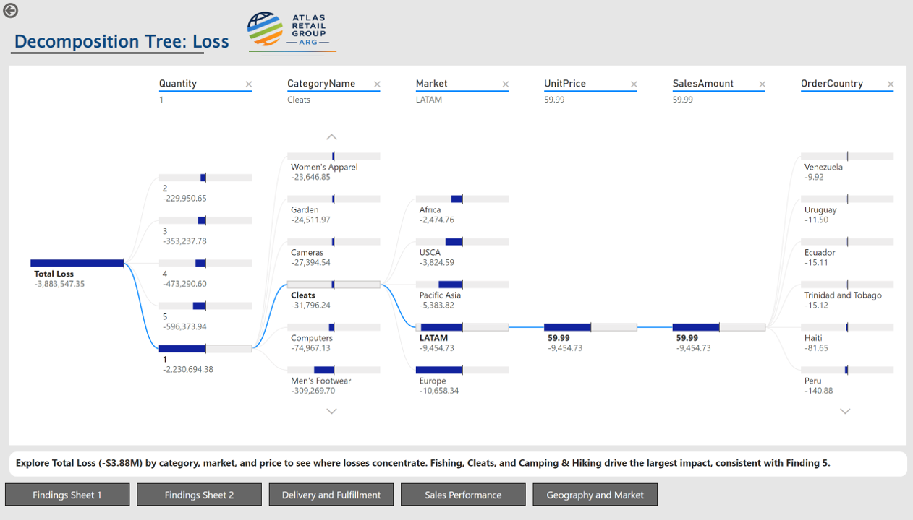
11. Late Delivery Risk ML Flow
Core ML Analytics Page: Late-delivery risk prediction model (LightGBM, AUC 0.77) with risk scores, feature importance, model performance metrics (confusion matrix, precision/recall), calibration curves, and drill-through to order-level detail. Risk distribution histogram, predicted vs actual late rates by market/shipping mode, and out-of-time holdout validation metrics.
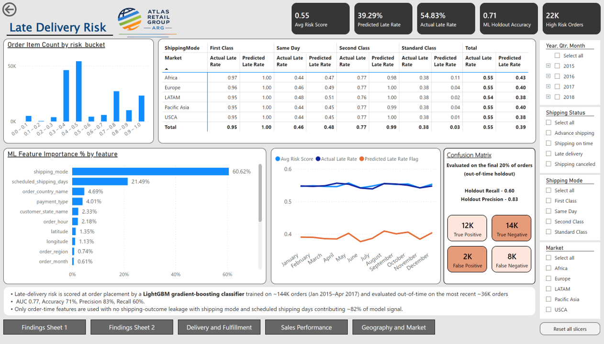